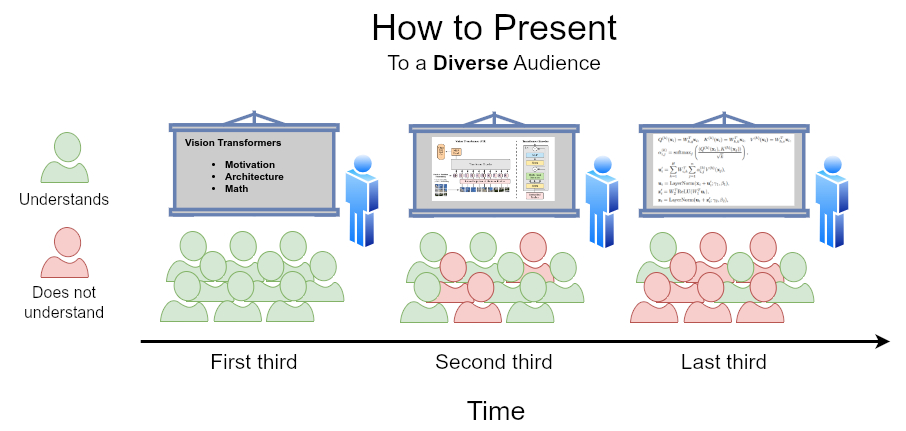

FSU SC Machine Learning Seminar
We are a group of people located in and around Tallahassee, all sharing an interest in machine learning. Our primary objective is the exchange of knowledge and ideas. The seminar is hosted by the Department of Scientific Computing at the Florida State University (thus FSU SC). If you are interested in getting to know us and possibly joining, we convene every Friday at 1:00 pm ET at SC-499 - you can also join via zoom. To become a part of our mailing list, please email Nathan Crock. We are a diverse crowd, so presenting takes some thought. Our approach is best expressed by the NASA Trichotomy of Presenting, illustrated by Nathan:

Schedule for Spring 2024
Fridays, 12:00 p.m. ET, SC-499.
Attend via Zoom: Zoom Link.
Proposed topics to discuss:
- Phylogeny
- Multimodal
- Inductive Biases
- Embeddings
- State Models
- AI + data assimilation
- Sandy (All Sandy)
- Post transformer architecture
- Tutorials (classroom machines)
- Minimum working examples
- Education + ML
- Deep Fake
- Disinformation
- Optimization
- Training methods
- Spiking NN
- Automation of language evaluation
- State of open LLM
- Language Frameworks
- Agents: Deep Dive
- Robotics
- Copyright (Law school)
- Quantum Computing ML
- Emotion
- Compression Techniques
- Health + ML
- Inpainting
- Biases?
- Advanced RAG Retrieval Augmented Generation
- Follow up Scientific Machine Learning
- Intro AGI
| Date |
Topic |
Person |
Materials/Links |
| 2024-08-30 |
Welcome session, outlook Spring 24 |
misc. |
- |
| 2024-09-06 |
- |
- |
- |
| 2024-09-13 |
- |
- |
- |
| 2024-09-20 |
- |
- |
- |
| 2024-09-27 |
- |
- |
- |
| 2024-10-04 |
- |
- |
- |
| 2024-10-11 |
- |
- |
- |
| 2024-10-18 |
- |
- |
- |
| 2024-10-25 |
- |
- |
- |
| 2024-11-01 |
- |
- |
- |
| 2024-11-08 |
- |
- |
- |
| 2024-11-15 |
- |
- |
- |
| 2024-11-22 |
- |
- |
- |
| 2024-11-29 |
Thanksgiving |
☕︎☕︎☕︎ |
☕︎☕︎☕︎ |
| 2024-12-06 |
- |
- |
- |
| 2024-12-13 |
- |
- |
- |
Current members and their ML interests
 |
 |
 |
 |
| Gordon Erlebacher |
Nathan Crock |
Tom Juzek |
Nick Dexter |
@FSU
- Neuronal Populations
- Evolving Topologies
- LLMs |
@FSU
- Interdisciplinary Data Science
- LLMs
- Retrieval Augmented Generation
- Computational Reading Models |
@FSU
- Morpho-syntax
- NLP
- LLMs |
@FSU Scientific Computing
- Neural Operators
- Interpretability
- Explainable AI |
 |
 |
|
|
| Olmo Zavala Romero |
Jose Miranda |
|
|
@FSU SC
- Scientific Machine Learning
- Oceanography
- Medical Imaging |
@FSU
- ML appl. in Oceanography
- Machine Vision
- LLMs |
|
|
Send your details to Tom if you want to be added to the table. Also, there is a $20 reward if 1) you know how to make the images come out in the same size, 2) even when the strings in the affiliation and interests rows change, 3) and we can do this in the current readme.md. Message Tom if you have a solution.